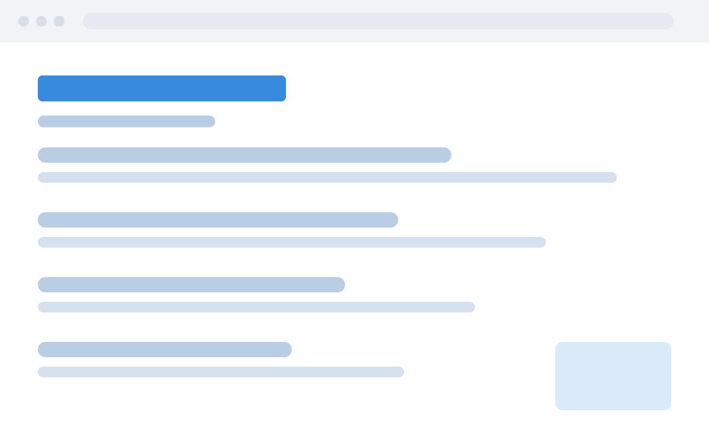

奶油蓝默认
assets/themes/default.css
奶油黄底 + 淡蓝点缀，整体清淡克制
适合 通用内容 / 知识分享 / 日常记录
- --accent 序号/标签2.78:1 △
- --ink-soft 副标题2.62:1 △
- --ink 正文15.21:1 ✓
--theme default
别名：default / 默认 / 奶油蓝 / creamblue / cream-blue
样式参考
一套样张，看遍所有皮肤
下面三页在所有皮肤/边框下共用同一份内容，只有样式在变
一份内容，多种皮肤
换皮肤只要加一个 --theme 参数，稿子一个字都不用改。
- 皮肤管配色，改
assets/themes/*.css - 边框管配图，改
--frame参数 - 想自己调色，打开
templates/theme-tuner.html
皮肤文件只写配色，字号间距都在 base.css 里，所以换个底不会连带把排版搞歪。
样张统一，才看得出风格差异。各用各的稿子比，比出来的不是皮肤，是随机。
配图边框

--frame 有三个值：hairline 细描边、paper 相纸框、none 无边框。 边框宽度会算进分页权重，所以换粗边框只会换页，不会溢出。